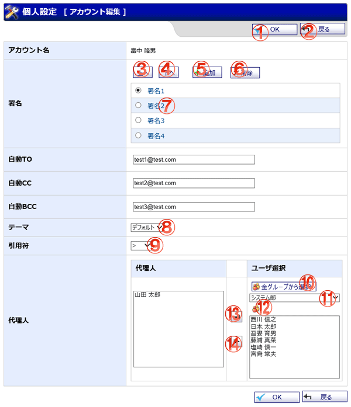

WEBメールの個人設定アカウント編集画面です。

機能説明
OKボタンアカウント編集確認画面へ遷移します。 |
戻るボタン遷移元の画面へ遷移します。 |
|---|---|
上へボタンラジオボタンで選択されている署名の表示順を1つ上げます。 |
下へボタンラジオボタンで選択されている署名の表示順を1つ下げます。 |
追加ボタンポップアップで署名登録画面が開きます。 |
削除ボタンラジオボタンで選択されている署名を削除します。 |
署名リンクポップアップで署名登録画面が開きます。 |
テーマコンボテーマカラーが表示されます。 |
引用符コンボ引用符が表示されます。 |
全グループから選択ボタンポップアップで全グループから選択画面が開きます。 |
グループコンボ選択したグループに所属するユーザがユーザリストに表示されます（既にメンバーに追加されているユーザは表示されません）。 |
グループボタンポップアップでグループ選択画面が開きます。 グループ選択画面でグループをクリックすると、 クリックしたグループが選択グループに表示されます。 |
追加ボタンユーザリストで選択されているユーザを、メンバーリストに追加します。 |
削除ボタンメンバーリストで選択されているユーザを、メンバーリストから除外します。 |
表示・入力項目説明
アカウント名
アカウント名を表示します。
署名
署名を表示します。
自動TO
自動TOを入力します。
自動CC
自動CCを入力します。
自動BCC
自動BCCを入力します。
テーマ
テーマを選択します。
引用符
引用符を選択します。
代理人
代理人を選択します。